［＃ページの左右中央］
北極厳冬に襲われたロンドン物語――危機状況、冬の道連れは、飢饉、寒冷、火災
［＃改ページ］
デイリーチャット紙の編集部長がいぶかった。いったい自分は何で会社に居残ったのか。
手元の温度計は摂氏零下一〇度まで下がり、夜明け前に摂氏零下一八度に下がりそうだし、朝刊は、気象記事だけでは埋められない。
さらに、北トレント以北の情報は一切なく、電信と電話が不通とのこと。外は猛吹雪と大雪、すさまじい寒気と静寂に襲われている。
あした一月二十五日の新聞は記事不足になる。ただしアメリカが使命感に燃え、当座の新ネタを何か送ってくれば別だ。
たとえば牛肉パン商社という記事の続編。はたしてサイラス・ブレットは世界の食料を買い占めることができるのか。ブレットは一年前、質屋の店員で、何ら重要人物じゃなかった。いつ文無し相場師を脱したのかはどうでもいい。新聞社の観点では三段の値打ちがある。
編集次長が駆け込んできて、両手をフーフー。骨の髄まで
「あした葬儀新聞になるぞ」
と部長がブスッと言った。
でもゴーフ次長は上機嫌だ。
「そうですね。いまテムズ川が通行不能になった衝撃的な細密画が仕上がりましたよ。北極気候が回復するのは一週間後でしょう。数日間、肉類や小麦粉は一切入荷しないでしょう。現状ではパンと肉が不足するのは否めません。それに例によって、あのサイラス・ブレットが仕掛けています。だから食糧不足になります」
編集部長は帰宅するつもりだった。まだぐずぐずしているのは、何か事件を期待していたからだ。
深夜ちょっと過ぎ、なにやら騒ぎを聞きつけたとき、今にも編集次長室が煮えたぎろうとしていた。ガタガタという足音。たちどころに蜂の巣をつついたように騒ぎ始めた。
「ゴーフ次長、何をつかんだ」
と部長が叫んだ。
次長が転がり込み、手には一束の原稿記事が。
「ブレットが破滅です。神の
フィッシャー部長が上着を脱いだ。何事も待ち人に来たる。部長は原稿に肥えた眼を通し、念を入れて
部長がやっと口を開いた。
「買い占め危機は去った。だが現実はまだ供給不足だ。海上に食糧船はほとんどないし、たとえ接近しても一面氷じゃ入港できない。ロンドンが飢饉寸前だなんて言っちゃいかんが、予測はできる」
ゴーフ次長は軽く会釈して退出した。一時間後、印刷機が回り、本格的にバタバタと音を出し始めた。刺激的な活字が躍っていた。
そして退社したフィッシャー部長が降りしきる雪の中、ベッドフォード広場の方へ眠そうに歩きながら持った感想は、結局世の中どうってことない。
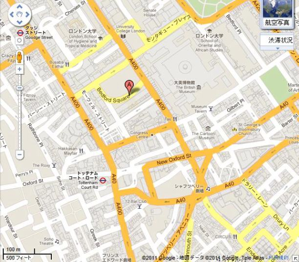
刺すように冷たい風が東から吹き、ここ数日の透けるような青空はどこかへ行ってしまった。
フィッシャー部長が腰を曲げた原因は風、魂まで抜かれるようだった。帰宅後、身震いして玄関の暖炉に覆いかぶさった。
気圧計を見ながらつぶやいた。
「まいったな。昼飯から一センチ下がっている。
独り言中、強烈な風が家を揺さぶるさまは理不尽な暴力だ。
一月二十四日夜、吹雪の第一波がロンドンを襲った。寒気が和らぐ気配は
真夜中ちょっと過ぎ、強風が全開。降雪がとても細かいのでほとんど気づかないが、次第に積もり、遂に明け方、通りは積雪が五十センチになった。風がもろに当たる大通りは吹きさらしになり、まっさらな畑のようで、その他の積雪は約一メートル。
泣くように、吠えるように、立ち枯れよとばかり風がなお吹き荒れて、灰色の一日に突入した。粉雪が窓ガラスや壁に当たっている。
九時までに何百という電話回線が切れた。雪と風力で全部ちぎれた。現時確認できる限り、同じことが電信線でも起こっている。
十一時、地域以外は手紙が配達できなくなり、郵便局の発表によれば電報も管轄外は保証しかねるという。ヨーロッパ本土からは何の音沙汰もない。
まだ、大きな警告事態は起きない。そのうち雪はやむに違いない。シティで金融業務なんか全く無理、だって郊外居住者の四分の三は午後二時までにロンドンに来れないもの。一時間後、公表されたのは正午からロンドン駅の全線で列車が運休する。
深い切り通しや、トンネルが積雪で通行不能になった。
そのうち雪は、やむだろう。こんなに続きはしない。しかし夜のとばりが降りても、まだ降り続くか、渦巻く灰色の粉雪。
夜のロンドンは死んだようだった。例外は強風で地面がむき出しになる所だが、積雪はものすごく、ある場所など一階の窓まで達した。道路掃除が当日早朝、いやいや行われたものの、わずかに二、三の主要道路が南北、東西に通行できるのみだ。
一方、しつこい寒気は少しも和らぐことがない。正午前だというのに温度計は常時、摂氏零下九度。英国人に馴染みのツィード服は強風を防ぐには不十分だ。烈風がなければ我慢もできよう。かつてロンドンは、もっと低温気候に遭遇したことがあったが、こんな強風や長期戦はない。そして依然として白い粉雪が降っている。
日没後、大通りからほかへ行くのは、とても危険だ。あてのない浮浪者達がいつもの通りをうろうろ、すっかり土地勘を失い、
第一日目の終盤、つまり二十四時間後、平均積雪は一メートルになった。狭い通りに白い粉雪が積みあがっている。ストランド南側の大通りは灰色の城壁といったところ。あちこちで人々が二階の窓から不安そうに見つめ、救助を求めている。こんな光景がロンドンに出現したのは第二日目の夜明けであった。
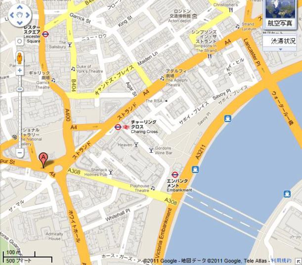
一月二十六日の正午すぎ、大雪が止んだ。三十六時間強風が容赦なくロンドン中に叩きつけた。こんなことは人々の記憶にないし、記録にもない。雲の薄い切れ目が開き、太陽がまぶしい場景を照らした。
奇妙、静寂、この世のものと思われないロンドン。白一色の町に、向う見ずな連中があちこちから歩きだし、物珍しげに眺めるのは、庶民のあくせく働く姿だ。だが、期待に添うようには見えない。
もろい氷を踏みしだくバリバリ音が気に障り、口々に押し殺したしゃがれ声も不快だ。
ロンドンの不安な目覚めには、来たるべき災害の予感があった。正午ごろ、引き続く寒気の為に雪が固まり、歩けるようになった。
滑稽な光景が繰り広げられ、人々が寝室の窓に登り、軒下の雪山から滑り下りて道に出るのは、ちっとも珍しくなかった。仕事はすっかりそっちのけ。さしあたりロンドンっ子はラップランド人に変身し、いの一番の関心は食料と暖房だった。
確認する限り、猛吹雪帯は
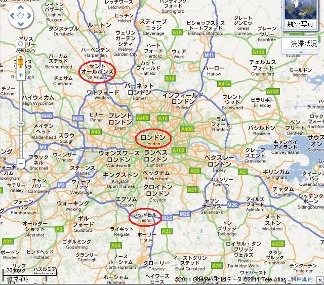
事実上、地下鉄以外に動くものはない。ほとんどの街灯支柱が強風で倒れ、中でもとどめは寒気の為にガスがやられ、夜のロンドンがほとんど真っ暗になったことだ。
ところで何千人もの最大の需要は燃料だ。石炭は波止場にあったが、玄関先まで届けるのは全く別問題。凍った氷上を軽ソリと馬で走るのは最適だが、過積載の馬車は全く進まないことが分かった。電車ならいくらか役立つだろうが、架線がすべて切れている。
さらに、テムズ川沿いの穀物保管代はとても安かった。現地の請負人や商人はサイラス・ブレットの脅しに少しも屈せず、不足分しか買わず、早晩、賭けが報われると確信していた。
だから商いは当日取引だけだった。同様なことが卸肉業者内でも行われ、ロンドン全域に新鮮な肉をたっぷり供給した。貧困層の大多数は米国価格で米国品を買うから、米国品が大量に供給された。
ここでまたもサイラス・ブレットが介入した。卸業者達は再び当日取引以外の商いを断った。
最後にして最悪、主要供給路であるテムズ川が、現存人間の記憶でたった一回、グリニッジの川下で凍ってしまった。
ロンドンの喉元をがっちり包囲された様子は、あたかも異国軍が城門まで押し寄せたかのよう。供給が断たれ、数日間籠城になりそうだ。
パンの値段が一
他方、外部からいいニュースは全くなく、ロンドンは世界から切り離されたよう。最悪だったが、さらによく考えればもっと悪いことが起こりそうだった。
ケッペル通りで雪だまをよじ登り、寝室窓から侵入する人を見ても、厳格な警官の胸中には何の驚きもない。その地域ではそれが家に入る唯一の方法だ。だが歩道の少し先は、雪がなく、安全だ。
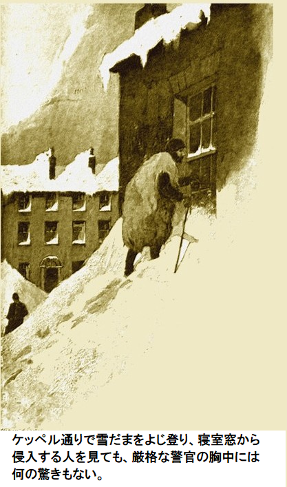
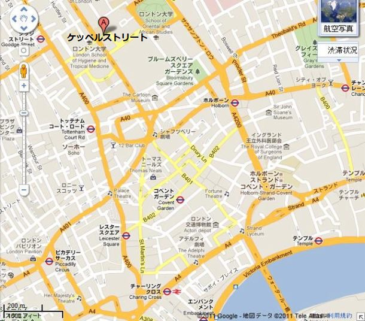
フィッシャー部長がブツクサ。
「会社で何か悪いことでもあったか。くそったれ。チャット新聞をなんで邪魔するんだ、悪天候め」
部長はベッドからくるりと降りて、窓を開けた。氷のような隙間風が心臓をグッとわしづかみ、一瞬死ぬかと思った。
ゴーフ次長が部屋に転がり込み、殺人風を急いで閉めた。
「零下二〇度近いですよ。会社へ来てください、部長」
フィッシャー部長がガス灯をつけた。一瞬、我を忘れて見とれたのが次長の姿。頭を包んでいるのはアザラシの毛皮から裂いた古い布切れ。頭から足先まで羊皮を巻きつけている。死骸からはぎとったものだ。
「北極圏の古老からせしめました。中はとてもベトベトしていますが、べらぼうな寒さは防いでくれます」
「次長、今晩は出社しないと言ったろ。ここしかまともに温まれん。良紙、良品ならずだ。明日は五千部も売れんぞ」
次長がせっかちに割り込んだ。
「ええ、そうですね。東バタシー地区のハンプデン議員が部長をお待ちです。抜け目のない一味が石炭を買い占めました。ロンドンには五十万トン程ありますが、数日間補給の見込みがありません。きのう小集団が全部買い占めました。明日の価格は寄りつきが一トン当たり三ポンドに張りつきます。ハンプデン議員は激怒しています」
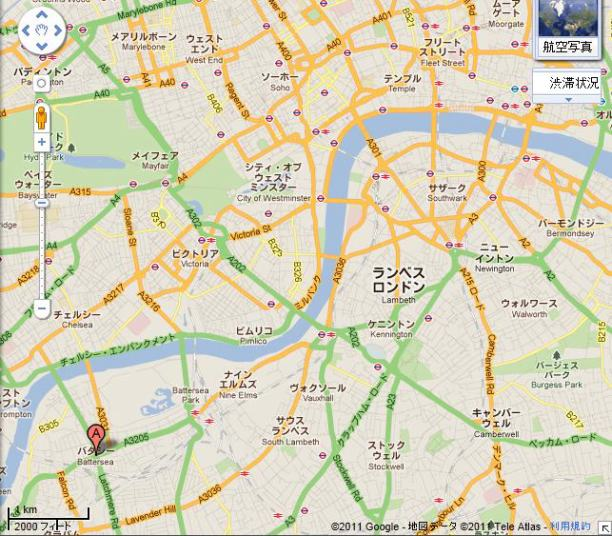
部長は大急ぎで服を着こんだ。記者魂がむくむく。
扉の所で冷気に襲われ、後へよろめいた。上着を二枚、頭にスカーフを巻いたのに、命が縮む気がする。空に輝く月は鋼鉄のように冷たく、空気には凍ったような
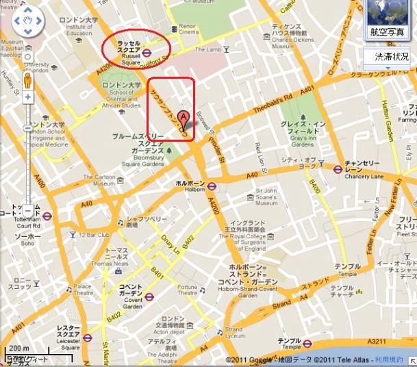
二人は話さず、会話は不可能に近い。部長が会社へよろよろたどり着き、遂に酒に手を出した。何の感覚もないという。口ひげが
頑健な体格のジョン・ハンプデン下院議員が立腹して事務所をうろうろしていた。議員は肉体の弱さとか苦痛など無縁なように見える。
議員がまくしたてた。
「きみにいっぱい書いてもらいたい。あすのチャット紙で実態を暴いてくれ。特ダネを提供しよう。適正に処理すれば、ロンドンには石炭が充分あるので、この危機を乗りきれる。もし扱いを誤ると何百という家族が寒気と飢餓で死ぬだろう。このような危機において国家が持つべき権力は、物事を命令し、公正な価格で石炭を売り、必要なら放出することだ。現在一握りの金持ちが大災難で儲けようとしている。ヘイズやライスミスやそのたぐいだ。以前きみはやつらと衝突した。こんなむごい仕打ちに耐えられない貧しい人々に、呼びかけてもらいたい。あした午後、私は真面目な何千人もの労働者と下院へ押しかけ、悪事を止めるよう要請する。非暴動、非暴力を心がける。石炭を五十キログラム程度買う労働者が一番の被害者だ。私のやり方なら、労働者は少しも苦しまない。欲しいだけ持っていけばいい」
フィッシャー部長の目が戦闘モードになった。すっかり温まり、たっぷり飲んだ酒が効いてきた。手元に良識ある特別有名な議員がいる。猛吹雪や積雪や寒気の災害はとてもひどいが、石炭不足の被害は忌わしい。
法的には街の盗賊どもがごっそり儲けるのを防ぐ手立てはない。しかし、ロンドン中の何千人という労働者が石炭を手に入れようと決めたら、だれも止められないだろう。
フィッシャー部長が叫んだ。
「最善を尽くします。仕事の為にひと肌脱ぎましょう、もちろんたとえですよ。明日の午後は下院会議が紛糾するはずです。まあ、ゴーフ次長に呼び出されてよかったです」
チャット紙の印刷はやや遅れ、全国版は発行できないが、ささいなことだ。部長と次長にとっては最高の機会となった。メッサー・ヘイズ社はチャット紙朝刊にピリピリするはずだ。
フィッシャー部長がついに満足げにため息をついて仕事を終えた。上着とスカーフを引っかけて、通りへ下りた。寒気が一段と突き刺さる。
行き場のない警官が自分の義務を忘れ、酒をしつこく欲しがっている。凍りついた体と魂を温めるものなら何でもという感じだ。ゴーフ次長は例の奇怪な羊皮を着こんで既に通りへ消えて行った。
フィッシャー部長が息切れしながら、警官に言った。
「おはいんなさい。恐ろしいですね。帰宅するつもりでしたが、おやおや、そうしないことに決めました。今晩は会社の暖炉のそばで眠りますよ」
青服警官の体がだんだんと温まっていった。歯はガタガタ、顔は真っ青だ。
「どうか避難させてください。私は警察からきっと解雇されてしまいます。年金も失います。しかし年金が何だってんだ、ストランドで凍りついている警官に」
部長が眠そうに、返事した。
「理屈だね。それで、泥棒は？」
「泥棒ですって、こんな夜に。ロンドンの通りはいつも安全です。燃料をくべてもよろしいですか」
部長はもう眠ってしまい、炉格子のそばで横になっていた。
チャット紙の特集で暴かれた不安が翌朝すぐに裏付けられた。波止場の石炭は五十キログラムあたり三シリング以下では入手できなくなった。石炭を使いきった者のなかにはその価格で買う者もいたが、大多数は引き返し、文句をぶつくさ言って、落胆した。
どこへ行こうが同じような話が帰ってきた。このような話があったのはキングス・クロス、ユーストン、セント・パンクラス、カレドニアン通り。状況が一変し、危険かつ臨界に達した。
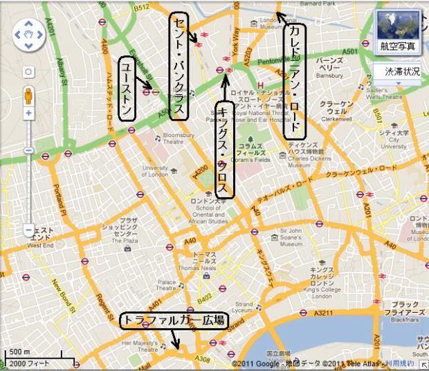
不思議と噂が広まり、ジョン・ハンプデン議員が大衆集会に出席するよし。午後二時半過ぎ、トラファルガー広場とそこへ行く道は人々であふれた。
ちょっと遅れてハンプデン議員が現れた。応援や熱狂はなかった。余りにも寒すぎるためだ。暴動の気配もない。群衆が欲しいのは大衆の護民官たる議員が石炭の入手方法を示すことだ。これこそ唯一最大の案件であり、しかも安い価格で。
ハンプデン議員も充分冷静で、抑制していた。議員の雄弁につきものの、いつもの過激さはなかった。騒がず落ち着くよう訴えた。集まった群衆に約束したのは、日が暮れる前に石炭の入手方法を示す。そのためには聖スチーブンの外に群衆を整然と集め、現在の危機について大臣に直接ただす。質問紙を商務大臣に私書で送った。もし返事がなければ、次の行動を起こす。
少しどころかちっとも要領を得なかった。一時間後、大群衆が聖スチーブンのあたりに集結した。だが、
いつもの午後、議会席は超満員だ。明かりがジョン・ハンプデン議員の四角い渋面に当たると、つまらん議題をぺちゃくちゃわめいていたのがピタリ。やおら、ハンプデン議員が立ちあがった。
ハンプデン議員は質問を的確かつ要点をついた。それから目立たぬよう隠れているジョン・ヘイズ氏と同僚のライスミス氏に向きなおり、一〇分間厳しい非難を浴びせた。
商務省当局のあいまいな回答から得た情報では、政府の対策はないらしい。ロンドンに降りかかった大災難に、悪徳金融業者どもが持ち金をここぞと投じた。もしこれら新興企業が民衆の意見に屈しなければ……。
ヘイズ議員が口ごもって演説。
「これは商売の取引です。譲歩はしません。もし政府が低所得層に助成金を出したいのなら――」
怒号で後は聞こえない。議場のあらゆる所で勝手に議論が始まった。この場で冷静なのは議長とジョン・ハンプデン議員の二人のみ。第一卿が立ち上がり、騒ぎを鎮めた。
やおら第一卿が口を開いた。
「解決方法があります。我々が時限法を通せば、議会に権限を与え、燃料と食糧をすべて民衆に与えることができ、このような危機に対処できます。同様な方式がダイナマイト法で行われました。二日あれば法令集に載るでしょう」
ハンプデン議員が絶叫した。
「そうしている間にも貧困層は凍死します。院内総務が最善を尽くされれば、議案は法律になるでしょう。今晩以降、ロンドンの労働者は法律が発効するのを待って、備蓄を引き出せば、刑罰に処されないでしょう。しかし諸君は、いま外にいる群衆を処罰することはできません。私がいま世界に示そうとしているのは何千人という人々の不屈な行動です。わが尊敬する二人の反対議員殿、現状を見たいのなら、私と一緒に来てください。私が安全を受け合います」
ハンプデン議員が議会に大きく手を振った。退席して外へ出た。ヘイズ議員が立ちあがって話したが誰も聞いちゃいない。劇的な幕切れとなり、ハンプデン議員は二つの約束をした。数分もたたないうちに議会は空っぽになった。外には押し黙り、辛抱強く寒さに震える大勢の人々がいた。
第一卿が商務大臣にヒソヒソ耳打ちした。
「ハンプデン議員はすごいですな。どこまでやれるか疑問だが。あそこの大衆が自らの力を自覚したらと思うと。そのときはもっと暇になりますな」
議事堂の外には大勢の人々が、静かに、毅然と、決意も固くハンプデン議員を待っていた。群衆に深いため息が湧いたのはハンプデン議員の顔を見て、駆引きが失敗したと読んだ時だ。
議員のがっちりあごには断固たる意志があり、不可能とは言わないが、奥目にも輝きがあった。こうして、貪欲な金持ちどもがひどいことをやりだし、恥なくも民衆の不幸で儲ける。
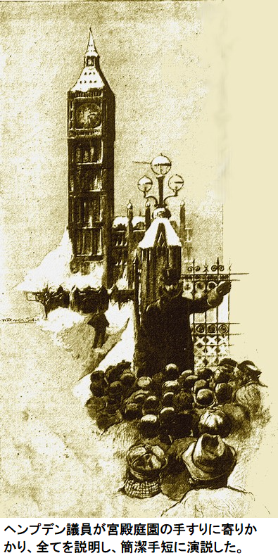
ハンプデン議員が宮殿庭園の手すりに寄りかかり、全てを説明し、簡潔手短に演説した。
「石炭が必要な人だけが、ここにいる。しかし、明日も誰か要るだろうし、次の日も、ずっと。それなら皆に行かせて取らせろ。
警官が前に進み出てハンプデン議員の肩に触った。近くの人は何が起こったか分かった。同議員は不法行為を民衆に
同議員が抗議した。
「保釈が相当だと思うが？」
警部補が答えた。
「条件があります。公式に起訴しますが、この件にもう参加しないと約束する必要があります」
ハンプデン議員は二つ返事で約束。もう自分の役割は終わったので、あとは意味がない。どうやら疲れて
フィッシャー部長がハンプデン議員にしつこく食い下がって訊いた。
「詳しく知りたいです。全く自然発生とは到底思えません。議員が焚きつけたに違いありません」
ハンプデン議員が白状した。
「そうだよ。事実はこうだ。ロンドンっ子に降りかかる危機は、ずっと私の懸案課題だった。このようなことが起こったら、たとえば飢饉・洪水・北極厳冬などだが、そのとき我々は強欲な金持ちどもの餌食になる。そして政府が無力なことも知っていた。燃料、つまり燃料の需要だが、これが最初に頭に浮かんだ。その場所を突き止めた。大手の在庫場所と、通常の備蓄量もだ。状況を掴んでいた。夕べ大いに役立ったよ。あそこの整然とした群衆の中には労働組合職員が二百人ほどいて、行先を正確に知っている。混雑、暴動、混乱はほとんどない。しかも日没前に全員、石炭が手にはいる」
フィッシャー部長が肝心な点を質問した。
「ではあとは部下にお任せするつもりですか」
「私は約束した。数分でボウ通りの裁判所へ出頭せねばならない。知っての通り、強盗のそそのかしだよ。いや、
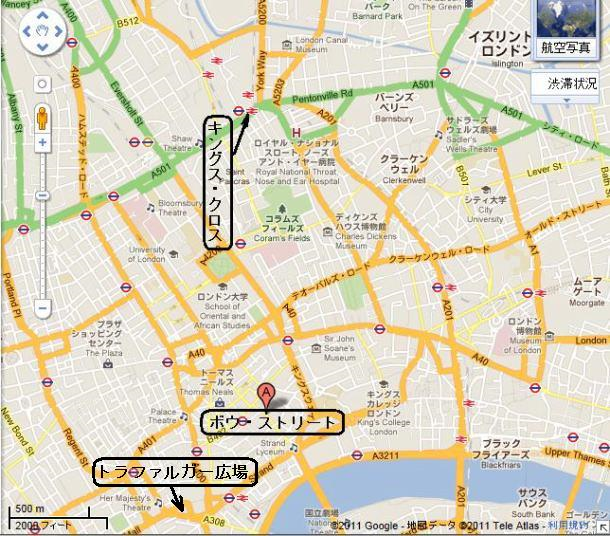
フィッシャー部長がうなずいて会釈しながら自分の羊皮を引っぱり出した。異様な古い騎兵靴を履き、中に綿布を詰めた。大きな毛織帽子を、昔の山岳農婦のようだが、これで頭と耳をおおった。同様な衣装の議員が多数いたが、誰も笑うものなく、誰も滑稽な様子に気づくものはいなかった。
「さあ早く。新聞記事を書かないのは惜しい、流通しなくても」
と部長が次長へ言った。ゴーフ次長は大きな葉巻で鼻先を温めている。
次長がごねた。
「こんな極寒に何が流通しますか。外は大荒れですよ。考えるだけでぞっとします、真っ昼間トラファルガー広場で倒れて、凍死するなんて。見たことですか。くそっ、この荒廃が気に障りませんか」
再び次長は自分の羊皮を着ながら身震いして言った。
「悪夢になりそうだ。やがてホッキョクグマを避けるようになるかもしれません。仲良くなんかなりたくないわ。ハンプデン議員支持者の方へ行きましょう」
一方ロンドンの大勢の労働者たちは着実に北へ向かった。両輪のない荷台が何百台とあり、当然進みはのろい。でも長丁場だから時間はある。というのも一台に十人ばかり付いており、隣人同士協力しているように見えたからだ。
次第に勢いが変わり、ある方向へ曲がり始めた。軍隊が二十か所以上から目標点へ行進するようだ。周知の通り、群衆の中の二百人ほどは、行き先と現場命令を正確に知っていた。
今や、全方向から集結中だ。静かに、着実に、決意を秘めて、カレドニアン通りからユーストン、フィンズバリ公園からキングス・クロスの広範囲に及んだ。粛々と整然と進んだので、ザクザクという雪を踏みしめる音と、ハアハアという苦しい呼吸音だけしか聞こえなかった。
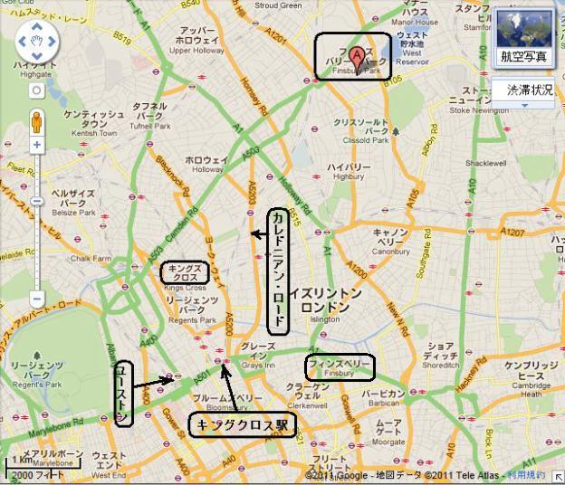
ユーストン駅の近くで始めて抵抗の兆しに遭遇した。八十人の警官が道をふさぎ、群衆を包囲した。群衆は熱くならず、断固たる決意の中に、警官をさげすむ気持が一気に膨らむばかり。一人か二人、警棒で頭を割られたが、勝ち目は充分だ。
五分もすると警官隊は全員武装解除され、手錠で縛られ、戦争捕虜のようにひったてられた。たぶん警官の心情も大衆と同じだったのだろう。いつのもように熱心に警備しなかった。
キングス・クロス駅に来ると、警官の大部隊が集結し、ここで流血が相当あった。狭い範囲で何千人がひしめき小競り合い、真っ白い静寂な空間は乱闘する人間で真っ黒になり、騒乱の声が遠くまで響いた。最後には警官隊が後退し、膨大な群衆に
勝利は見かけよりずっと簡単だった。というのも警官が群衆を前にちっとも仕事に身を入れなかったからだ。多数の警官は自宅の暖炉を思えば、敵対階級の労働者よりずっといい暮らしだ。
一方、多くの地方当局は軍隊を要請しようとしていた。軍隊はその種の行動を一切拒否した。まさにきわどい瞬間だ、軍隊へ命令を出せば全部隊が一斉に動く。
下院ではヘイズ議員と同調者の必死の抗議に対して、陸軍大臣が干渉せずと冷静に判断した。各地の市長が
息せき切って現場へ駆けつけてみれば運よく、フィッシャー部長とゴーフ次長は、遂に巨大な門にたどりついた。ちょうどユーストン駅向いの広場だ。広大な面積があり、石炭の小山が三つ以上、いつも通り丁寧に積み上げてあった。
嬉しい光景を眼前に、広場に侵入した二千人の民衆は厳格な態度が一気に崩れた。両手をあげて笑い乱舞。石炭会社の事務所に突進。黒ダイヤ財産の名目上の所有者である社員を庭へ引き出した。背後からゴトゴト、ガタガタと無輪の荷台が出て来て、前進した。
指導者が説明した。
「恐れる必要はない。我々がここへ来たのは石炭を買うためだ。事情により一人当たり五十キログラム袋が一袋から三袋ぐらい必要だ。代金は現金、商品券でもご随意に。ただし石炭を持っていくことを肝に銘じよ。社員のキミらは門に立って、検品するだけでよい。値段は推測の域だが、損はさせない。つまり単価は五十キログラムあたり十八ペンスだ」
三人の社員が不安げにニコリ。同じ瞬間、同じ妙な光景が他の百以上の石炭場で見られた。三百から四百人がもう石炭山に群がり、大きな塊がゴロゴロ、ガラガラと崩れ、一帯が煤けた砂状の黒い粉におおわれ、どの顔もすぐに真っ黒になった。
ほどなく、石炭場から次々と引き揚げて行った。石炭荷箱の大きな群れが、固く凍結した雪上をバリバリと音を立てながら、積荷により一人、二人、三人に引かれ、あるいは何人だろうが、前進しながら勝利の歌を歌い叫んだ。無法、悪行、法律違反だ、しかし人は人の為に法を造る。
ゴーフ次長とフィッシャー部長がユーストン通りを進んでいくと、やがて興奮した集団に不意に囲まれた。
つかの間、沈黙があった。頭から足元までずぶぬれにして、摂氏零下一八度近い温度にさらすやり方にはぞっとする。民衆は火災、いや死に直面している。この行為は死を意味する、恐ろしい。
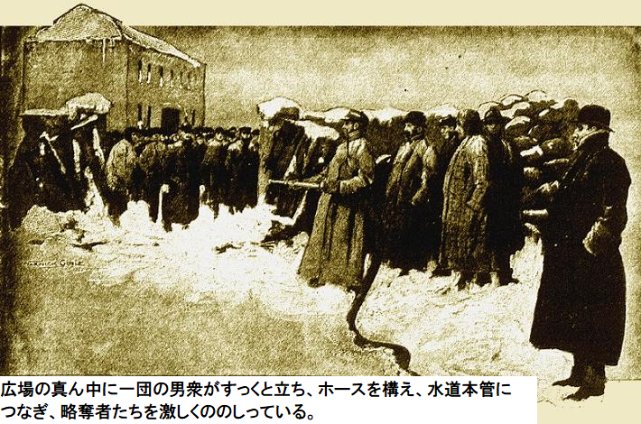
フィッシャー部長が大声でどなった。
「殺したいか。やればズタズタにされるぞ。狂ったか」
フィッシャー部長が衝動的に突進した。その意図を勘違いして、ホースを持った男が水栓を勢いよくひねった。怒りの声が広がった。だが劇的な変化は何も起こらず、水一滴すら出ない。すかさず、どっと笑いが湧き上がると同時に、にわか消防士の命も救われた。
「水が本管で凍っている」
と叫ぶ声。
言葉通り正解だ。たちまち、平静になった。フィッシャー部長が去りながらホッとして言った。
「これこそ災難そのものだ。水が本管で凍結している。明日の今頃も一滴の水も出ないだろう」
議会の中では次の日も熱い議論が続いた。ロンドンに戒厳令が検討された。推進派は一握りの変人や気難し屋、及び看過できない人々。反対派は石炭解放者や残りすべての人々。討論は十時になっても続き、フィッシャー部長は記者席へやる気無く戻ってきた。十一時、退屈王がまだ演説している。突然、電気のような衝撃が議会に流れた。
退屈な雄弁家の口が止まった。ちょっと疲れてきたのだろう。なにか異変が発生した。妙な緊張感で胸が締め付けられ、喉を締められ、やっと実態が分かった。一切の
「セシルホテルが火事です。現場は大炎上中」
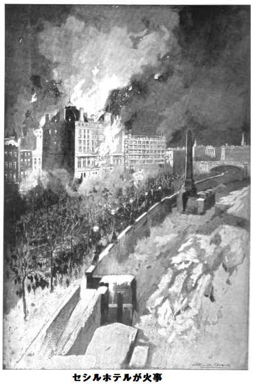
フィッシャー部長が記者席から現場へ駆けつけた。デモステネスまがいの議員ですら演説を止めて議会から飛び出した。誰にも災害規模など言える状況じゃない。こんな大火事に消防団は役に立たないことも自明だ。
ストランドや、周辺道路や、エンバンクメント沿いや、橋の上に大勢の野次馬が集まった。みな様々の奇怪な衣装だが、刺すような寒気を気にする様子はない。
ストランドは真昼のように明るい。紅白の巨大炎柱が空高く昇り、じりじり焦げる音が浜砂利の波音のよう。絶えずパンパンはじける音はマスケット銃だ。
豪華なホテル、ストランドとテムズ川のエンバンクメント地区で一番目立つド派手なホテル、これが消滅しようとしている。時々大量の火の粉がバサバサッと降り注ぎ、近接の木造家屋に落ちるが、周囲の屋根に登った消防士がすぐ炎を叩き消している。何トンもの雪が延焼地帯に積まれ、急造滑車で運び込まれると、次第に近隣の建物は水分を含み、冷え始めた。もしこのありがたい雪がなければ、ウェリントン通りからチャリングクロスに至るストランド南側は
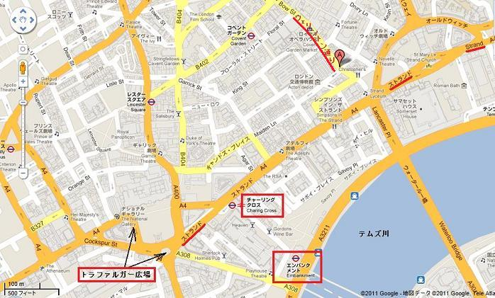
現状のまま突飛なことが起こらない限り、大災害は回避できる。消防士らにはまだやるべきことが山積みだ。
部長が歯をガタガタさせながら言った。
「会社へ戻ろう。熱い酒の為なら国も売りかねないよ。次の猛吹雪に備えるべきだな。英国以外は無関心だ。エディンバラからこっち側には除雪機と呼べるようなものが一つもないんだから」
次長がブツブツ。
「無防備ですね。今晩風が吹いていたら、ストランドは救えなかったでしょう。災害はまた来るかもしれないし、実際夜明けまでに一件、いや六件の火事がありました。猛吹雪が来たら、ロンドンはどうなります？ 考えるだけでめまいがします」
次長が黙った。寒過ぎて考えられない。徐々に二人は部屋の暖炉で温まった。次長が原稿束を持って物憂げに入ってきた。まったくやる気喪失、原稿が裏返し。眼に力がない。
次長がとぎれとぎれに言った。
「いやあ、本当であってほしい。ニューヨークは二日間豪雨です。低気圧の強大な西風をしっかり見張らないと」
引き続き二時間、部長は机にかじりついた。部屋が暖まってきたようだ。たぶん酒のせいだろう。羊皮を脱いで上着も取った。やがて額に小さな汗が噴き出た。暖炉からちょっと離れた。息苦しくて気分が悪く、新鮮な空気が欲しい。
体調不良かと思い、恥知らずも窓を開けた。空気が冷たく新鮮で生き返る心地だ。しかしここ数日間の突き刺す引っ掻くような殺人的な空気じゃない。軒下の雪上を歩く足音が変だ、びしゃびしゃ、ぐしゃぐしゃ。
窓から首を伸ばした。なにか水滴が首筋に落ちた。興奮して次長を呼んだ。次長も上着を着ていない。
「夢かと思いました」
と次長が不安げに言った。
部長は無言。金縛りが解けて、息が自由に吸える。外は一面、真っ白、静寂の世界、融けて行く、ポタリ、ポタリ……
了